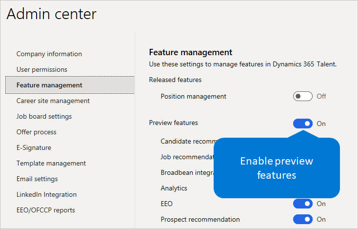

Manage features
Important
Dynamics 365 Talent: Attract and Onboard apps are being retired. Learn more at Retiring Dynamics 365 Talent: Attract and Onboard apps.
As part of our continuous rollout of human capital management (HCM) capabilities for Microsoft Dynamics 365 Human Resources, we want to let customers experience new features as soon as possible. Administrators can see and use preview features in their environments. These features are almost ready for general availability and have gone through extensive testing. We're just looking for a final round of customer feedback and validation before we release them for general availability.
This topic describes how you can enable preview features, and it lists the features that are currently available for preview. This list will be updated as features are released to general availability and as new features are released to preview. No notification is given when new features are released to preview. Users will just start to see the features. For more information about new features in Talent, see What's new or changed in Dynamics 365 Talent and Dynamics 365 and Power Platform Release Notes.
Enable or disable preview features
To access preview features, you must first enable them in your environment. Enabling or disabling preview features is environment-specific.
Important
When you turn on the Preview Features setting, you enable preview features for all users in your organization who are in that environment. When you turn off the setting, you disable preview features and make them inaccessible to your users. Preview features have limited support in Talent. They might use fewer privacy and security measures, and they aren't included in the Talent service level agreement (SLA). You should not use preview features to process personal data (that is, any information that could identify you), or to process other data that is subject to legal or regulatory compliance requirements.
Attract
Sign in to Microsoft Dynamics 365 Talent: Attract.
On the Setup menu (the gear symbol) in the upper-right corner, select Admin center.
On the Feature management tab, select the option next to Preview features so that it turns blue and says On.

Select or cancel the selection of individual preview features. If you do nothing, all available preview features are enabled.
Refresh your browser to start to see the new features. Any users who are already signed in will see the features the next time they sign in, or they can refresh their browser to see the features immediately.
Note
Some preview features might require additional configuration. Follow the links next to the preview feature to complete the setup for it.
Feedback
We want to hear from you about your experience with any of these preview features. We encourage you to regularly post your feedback on the following sites as you use these or any other features:
Community – This site is a great resource where users can discuss use cases, ask questions, and get community help.
Let us know about features that you want to see in the product, or let us know about any changes you think we should make to existing features. Suggest product ideas on the following sites:
Make sure that you don't include personal data (any information that could identify you) in your feedback or product review submissions. Collected information might be analyzed further and isn't used to answer requests under applicable privacy laws. Personal data that is collected separately under these programs is subject to the Microsoft Privacy Statement.
Tip
Bookmark this topic, and check back often to stay up to date about new preview features as we release them.